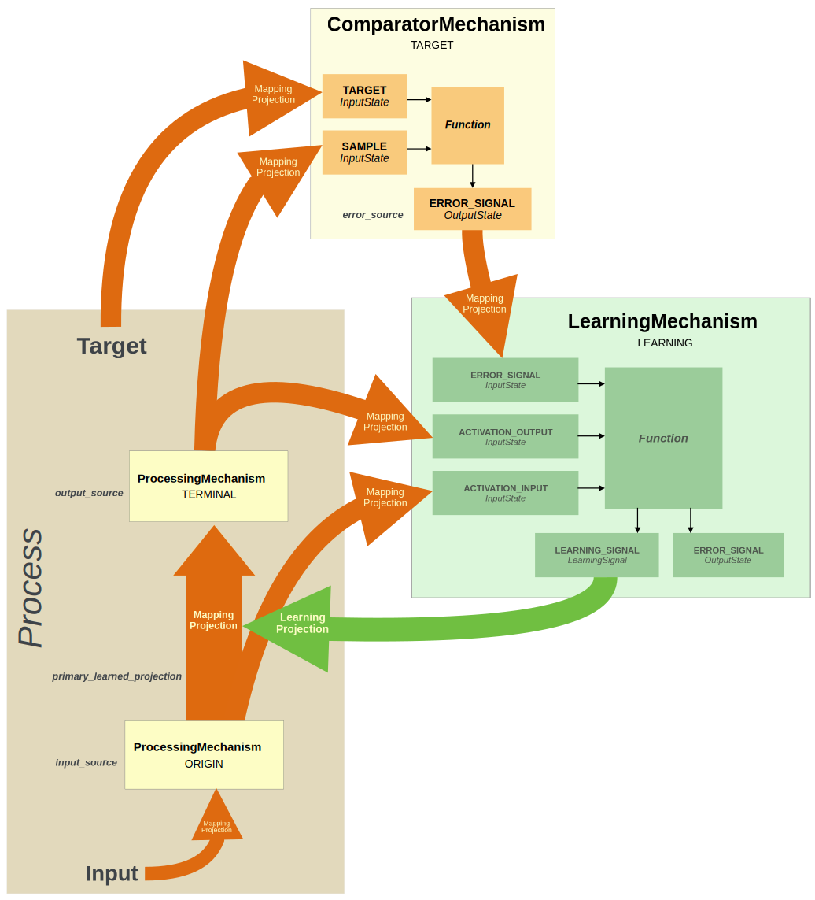

Learning Mechanism¶
Overview¶
A LearningMechanism is an AdaptiveMechanism that modifies the matrix
of one or more MappingProjections. Its function takes an error_signal (usually the output of a ComparatorMechanism or another Learning Mechanism),
as well as information about the MappingProjection and activity that
generated the error, calculates a learning_signal that is used to modify the MappingProjection(s) by way of
LearningProjection(s). Typically, a LearningMechanism is used to “train” a single
MappingProjection (its primary_learned_projection), using the output of the Mechanism to which that
MappingProjection projects (its output_source) as the source of the error it attempts to reduce. A LearningMechanism
can be used to train multiple MappingProjections, by assigning it additional LearningProjections; however, these will all use the same learning_signal, generated by the primary_learned_projection and its associated output_source.
All of the MappingProjection(s) modified by a LearningMechanism must project from one ProcessingMechanism to another in same System or Process. The learning components of a System can be displayed
using the System’s show_graph method with its show_learning argument assigned True.
LearningMechanism are executed after all of the ProcessingMechanisms in a System or Process have been executed,
and before any ControlMechanism of the System have been executed (see System Execution).
Creating a LearningMechanism¶
A LearningMechanism can be created in any of the ways used to create Mechanisms. More commonly, however, LearningMechanism are created automatically.
Automatic Creation¶
A LearningMechanism is created automatically when:
- a tuple specification is used to specify learning for a MappingProjection;
- a LearningProjection is created without specifying its
senderattribute.
In these instances, a ComparatorMechanism, LearningSignal, LearningProjection, and any additional Projections required to implement learning that do not already exist are also instantiated. This is described below, under Learning Configurations.
Explicit Creation¶
If a LearningMechanism is created explicitly (using its constructor), then it variable and error_source
arguments must be specified. The variable must have three items that are compatible (in number and type) with the
value of the the LearningMechanism’s three InputStates. The
error_source must be a ComparatorMechanism for single layer learning
or for the last MappingProjection in a learning sequence for multilayer learning; otherwise it must be a LearningProjection.
When a LearningMechanism is created explicitly, it can also be assigned existing LearningSignals and/or specified to create these, as well as LearningProjections from these to specified MappingProjections. These are specified in the learning_signals argument of the LearningMechanism’s constructor, using any of forms allowed for specifying a LearningSignal.
Structure¶
A LearningMechanism has three InputStates, a learning function,
and two types of OutputStates that are used, respectively, to receive, compute, and transmit the
information needed to modify the MappingProjection(s) for which it is responsible. In addition, it has several
attributes that govern its operation. These are all described below.
InputStates¶
These receive the information required by the LearningMechanism’s function. They are
listed in the LearningMechanism’s input_states attribute. They have the following
names and roles (shown in the figure below):
- ACTIVATION_INPUT - receives the value of the input to the
primary_learned_projection; that is, thevalueof that MappingProjection’ssender). The value is assigned as the first item of the LearningMechanism’svariableattribute.
- ACTIVATION_OUTPUT - receives the
valueof the LearningMechanism’s output_source (that is, the output of the ProcessingMechanism to which theprimary_learned_projectionprojects). By default, the primary OutputState of theoutput_sourceis used. However, a different OutputState can be designated in the constructor for theoutput_source, by assigning a parameter specification dictionary to the params argument of its constructor, with an entry that uses MONITOR_FOR_LEARNING as its key and a list containing the desired OutputState(s) as its value. Thevalueof the ACTIVATION_OUTPUT InputState is assigned as the second item of the LearningMechanism’svariableattribute.
- ERROR_SIGNAL - receives the
value <OutputState.value> from the *OUTCOME* OutputState of a `ComparatorMechanismor the ERROR_SIGNAL OutputState of another LearningMechanism. If theprimary_learned_projectionprojects to theTERMINALMechanism of the Process or System being learned, or is not part of a multilayer learning sequence, then theerror_signalcomes from a ComparatorMechanism. If theprimary_learned_projectionis part of a multilayer learning sequence, then theerror_signalcomes from the next LearningMechanism in the sequence (i.e., the one associated with theoutput_source). It is used by the LearningMechanism’sfunctionto calculate thelearning_signal; note that the value of the ERROR_SIGNAL InputState may not be the same as that of theerror_signalattribute or ERROR_SIGNAL OutputState (see note below). Thevalueof the ERROR_SIGNAL InputState is assigned as the third item of the LearningMechanism’svariableattribute.
Learning Function¶
The function of a LearningMechanism uses the three values received by the Mechanism’s
InputStates (described above) to calculate the value of its learning_signal and error_signal attributes.
learning_signal- the set of changes to thematrixparameter of the MappingProjections being learned, calculated to reduce the value of the LearningMechanism’s ERROR_SIGNAL InputState.
error_signal- the contribution made by theprimary_learned_projectionto the error signal received by the LearningMechanism’s ERROR_SIGNAL InputState. It is used by the LearningMechanism’sfunction, possibly weighted by theprimary_learned_projectionand the output of the ProcessingMechanism to which it projects (the LearningMechanism’soutput_sourceattribute), to calculate thelearning_signal. Its value is assigned as the value of the LearningMechanism’s ERROR_SIGNAL OutputState.Note
A LearningMechanism’s ERROR_SIGNAL InputState and its ERROR_SIGNAL OutputState may not have the same value. The former is the error signal received from a ComparatorMechanism or another Learning Mechanism, while the latter is the contribution made to that error by the
primary_learned_projectionand theoutput_source, as calculated by the LearningMechanism’sfunction(see error_signal above).
The default function of a LearningMechanism is BackPropagation (also known as the
Generalized Delta Rule; see
Rumelhart et al., 1986). However, it can be
assigned any other PsyNeuLink LearningFunction, or any other Python function that takes as its input a value with
three 1d arrays or lists and returns two 1d arrays or lists. The two values it returns are assigned to the
LearningMechanism’s learning_signal and error_signal attributes, respectively, as well as to its two OutputStates, as described below.
OutputStates¶
By default, a LearningMechanism has two OutputStates, the first of which is named ERROR_SIGNAL and
is assigned the value of the error_signal returned by the LearningMechanism’s
function, and the second of which is a LearningSignal and is assigned the value of the
learning_signal returned by the function.
They are each described below:
- ERROR_SIGNAL - this is the primary OutputState of a LearningMechanism, and receives the
value of the
error_signalused to calculate thelearning_signal. Its value is assigned as the first item of the LearningMechanism’soutput_valuesattribute. If the LearningMechanism is part of a multilayer learning sequence, the ERROR_SIGNAL OutputState is assigned a Projection to the LearningMechanism for the preceding MappingProjection in the sequence being learned - see figure below). Note that the value of the ERROR_SIGNAL OutputState value may not be the same as that of the ERROR_SIGNAL InputState (see error_signal).
- LearningSignal(s) - by default, a LearningMechanism has a single LearningSignal, which is a
special type of OutputState that receives the
learning_signalgenerated by the LearningMechanism’sfunction, and used to modify thematrixparameter of theprimary_learned_projection. The LearningSignal is assigned as the second item in the list of the LearningMechanism’s OutputStates (i.e., of itsoutput_statesattribute), and itsvalueis assigned as the second item of the LearningMechanism’soutput_valuesattribute.
Multiple LearningSignals and LearningProjections. Though not common, it is possible for a LearningMechanism to be assigned more than one LearningSignal, and/or more than one LearningProjection to its LearningSignal(s). This allows multiple MappingProjections to be trained by a single LearningMechanism. Note, however, that all of the LearningSignals of a LearningMechanism (and therefore its LearningProjections) use the same
learning_signal, that is calculated based on the LearningMechanism’sprimary_learned_projectionand its associatedoutput_source. This can be useful in some settings, such as for certain forms of convolutional neural networks.If all of the LearningProjections are used to implement the same form of modulation, (determined by their LearningSignals’
modulationattribute), then they should be assigned to a single LearningSignal. Multiple LearningProjections can be assigned to a LearningSignal by specifying them in the projections argument of its constructor, or the PROJECTIONS entry of a dictionary assigned to its params argument); however, thematrixparameter for the MappingProjection to which they project must have the same shape for all of them. If different forms of modulation are required to train different MappingProjections, then multiple LearningSignals should be assigned to the LearningMechanism, each specified for one of the required types of modulation, and then LearningProjections assigned to them for the corresponding MappingProjections. Multiple LearningSignals can be specified for a LearningMechanism by including them in a list assigned to the learning_signals argument of the LearningMechanism’s constructor.The
learning_ratefor each LearningSignal, and thelearning_ratefor each of its LearningProjections, can all be assigned different values (with the latter taking precedence over the former). If none of these are specified, thelearning_rateof the LearningMechanism is used (see below).All of the LearningSignals of a LearningMechanism are listed in its
learning_signalsattribute. Because these are OutputStates, they are also listed in theoutput_statesattribute, after the ERROR_SIGNAL OutputState. All of the LearningMechanism’s LearningProjections (that is, those belonging to all of its LearningSignals) are listed in itslearning_projectionsattribute.
Additional Attributes¶
In addition to its InputStates, function and OutputStates, a LearningMechanism has the following attributes that refer to the Components being learned and/or its operation:
primary_learned_projection- the MappingProjection with thematrixparameter for which thelearning_signalis computed. This is always the first Projection listed first in LearningMechanism’slearned_projectionsattribute.
learned_projections- a list of all of the MappingProjections to which the LearningMechanism sends a LearningProjection, listed in the order of the LearningSignal(s) to which they belong, as those are listed in the LearningMechanism’slearning_signalsattribute.
input_source- the Mechanism that sends theprimary_learned_projection, and projects to the LearningMechanism’s ACTIVATION_INPUT InputState.
output_source- the Mechanism that receives theprimary_learned_projection, and provides the input to the LearningMechanism’s ACTIVATION_OUTPUT InputState.
error_source- the ComparatorMechanism or Learning Mechanism that calculates the error signal provided to the LearningMechanism’s ERROR_SIGNAL InputState.
modulation- the default value used for themodulationattribute of LearningMechanism’s LearningSignals (i.e. those for which it is not explicitly specified). This determines the way in which thelearning_signalis used to modify thematrixparameter of thelearned_projections. By default its value is Modulation.ADD, which causes the weight changes in thelearning_signalto be added to the current value of thematrixparameter (see Execution for a description of how the modifications are executed).
learning_rate- specifies thelearning_rateparameter used by the LearningMechanism’sfunction, which uses it to multiply the weight change matrix before returning it as thelearning_signal. This can be specified in the learning_rate argument of the LearningMechanism’s constructor (or the constructor for itsfunction; doing so supersedes specification of thelearning_ratefor any Process, and/or thelearning_ratefor any System to which the LearningMechanism belongs. The default value for a LearningMechanism’slearning_rateattribute isNone, in which case the LearningMechanism (and itsfunction) inherit the specification of thelearning_ratefor the Process in which the LearningMechanism is executed. If that isNone, then it inherits thelearning_ratespecification of the System in which it is executed. If that is alsoNone, then it uses the default value of thelearning_rateparameter for itsfunction. Alearning_rateparameter can also be specified for individual LearningSignals and/or their associated LearningProjections. Those have a direct multiplicative effect on thelearning_signalof the LearningSignal and/or it LearningProjections (see LearningSignal learning_rate for additional details).
Learning Configurations¶
When learning is specified for a MappingProjection, a Process, or a System, all of the Components required for learning are
created automatically. The types of Components that are generated depend on the LearningFunction
specified, and the configuration of the Composition, as described below. If learning is specified for
individual Projections in the pathway of a Process, it takes
effect only if that Process is executed on its own (i.e., using the Process’ execute or run methods. For the learning Components associated with a Process to be implemented by a System,
learning must be specified for the entire Process. All of the learning Components
of a System can be displayed using the System’s show_graph method with its show_learning argument assigned True.
Single layer learning¶
This configuration occurs when only a single MappingProjection is specified for learning, or the LearningMechanism’s function only
considers the error on its output_source (and not any additional sources of error) when calculating the
learning_signal (e.g., for Reinforcement learning). In this case, a single
ComparatorMechanism and LearningMechanism are created (if they do not already exist); in addition, the following
MappingProjections are created:
- from an OutputState of the LearningMechanism’s
output_sourceto the ComparatorMechanism’s SAMPLE InputState. By default, the primary OutputState of theoutput_sourceis used; however, this can be modified by specifying its MONITOR_FOR_LEARNING parameter (see above).
- from the Process or System to the ComparatorMechanism’s TARGET InputState;
- from the ComparatorMechanism’s OUTCOME output_state to the LearningMechanism’s ERROR_SIGNAL InputState.
In addition, a LearningProjection is created from the LearningSignal for the
primary_learned_projection to the ParameterState for the matrix of the
primary_learned_projection. Because this configuration involves only a single layer of learning, no Projection
is created or assigned to the LearningMechanism’s ERROR_SIGNAL OutputState.
Components for Single Layer Learning
ComparatorMechanism, LearningMechanism and associated Projections created for the
primary_learned_projectionandoutput_source. Each Mechanism is labeled by its type (upper line, in bold) and its designated status in the Process and/or System to which it belongs (lower line, capitalized). Italicized label beside a component indicates the attribute of the LearningMechanism with which it is associated.
{kind=link}
Multilayer learning¶
This configuration occurs when a set of MappingProjections being learned are in a sequence (such
as the pathway of a Process); that is, in which each projects to a ProcessingMechanism that is the sender for the next MappingProjection in the sequence
(see the figure below). This requires the use of a learning function
that can calculate the influence that each MappingProjection and its output have on the error that the LearningMechanism
receives from the next one in the sequence (e.g., BackPropagation). In multilayer learning, the Components created
depend on the position of the primary_learned_projection and output_source in
the sequence. If these are the last ones in the sequence, they are treated in the same way as single layer
learning. This is the case if the output_source is a standalone Mechanism
(one not in a Process or System), the TERMINAL Mechanism of a standalone Process (i.e., one not in a System),
or the TERMINAL of all of the Processes to which it belongs in a System (and therefore a TERMINAL for the
System). In these cases, as for single layer learning, a ComparatorMechanism is created that receives the output
of the output_source as well as the target for learning (see TARGET Mechanisms below),
and projects to a LearningMechanism that is created for the primary_learned_projection. For all other
MappingProjections being learned in the sequence, the following additional MappingProjections are created for
learning (shown in the figure below):
- from the
input_sourceto the LearningMechanism’s ACTIVATION_INPUT InputState.
- from the
output_sourceto the LearningMechanism’s ACTIVATION_OUTPUT InputState.
- from the ERROR_SIGNAL OutputState of the LearningMechanism for the
next MappingProjection in the sequence (i.e., the one to which the
output_sourceprojects) to the LearningMechanism’s ERROR_SIGNAL InputState.
In addition, a LearningProjection is created from the LearningSignal for the
primary_learned_projection of each LearningMechanism in the sequence, to the ParameterState for the matrix of the primary_learned_projection. If the primary_learned_projection is the first in
the sequence, then no Projection is created or assigned to its LearningMechanism’s ERROR_SIGNAL OutputState.
Components for Multilayer Learning

ComparaotrMechanism and LearningMechanism and associated Projections created for a sequence of two MappingProjections specified for learning. Each Mechanism is labeled by its type (uppler line, in bold) and its designated status in the Process and/or System to which it belongs (lower line, capitalized). Italicized label beside a component indicates the attribute of the LearningMechanism with which it is associated.
TARGET Mechanisms. When a learning function is specified for a LearningMechanism that requires a target (e.g.,
BackPropagation or Reinforcement), a ComparatorMechanism must be specified to receive the target. For multilayer
learning, this is the error_source for the
last MappingProjection in each learning sequence. When learning is specified for a Composition (i.e.,
a Process or a System), the ComparatorMechanism(s) that receive the targets are identified and designated as TARGET Mechanisms,
and are listed in the Composition’s target_mechanisms attribute. If a TERMINAL Mechanism of a Composition receives a
MappingProjection that is specified for learning, then it always projects to a TARGET Mechanism in that Composition.
It is important to note, in this context, the status of a Mechanism in a System takes precedence over its status in any
of the Processes to which it belongs. This means that even if a Mechanism is the TERMINAL of a particular Process, if
that Process is combined with others in a System, and the Mechanism appears in any of those other Processes, and it is
not the TERMINAL of all of them, then it will not be the TERMINAL for the System. As a consequence, although it
will project to a TARGET Mechanism in the Process for which it is the TERMINAL, it will not do so in the System (see
figure below for an example). Finally, if a Mechanisms is the
TERMINAL for more than one Process used to create a System (that is, the pathways for those Processes converge on that
Mechanism), only one ComparatorMechanism will be created for it in the System.
TERMINAL and TARGET Mechanisms in Learning

Mechanism 3 is the
TERMINALMechanism for Process A, However, it is also anINTERNALMechanism of Process B. Therefore, Mechanism 3 is designated as anINTERNALMechanism for the System, and Mechanism 4 is itsTERMINALMechanism. As a consequence, ifBackPropagationis used for learning, then Mechanism 4 will project to aTARGETMechanism of the System, while Mechanism 3 will not.
Execution¶
LearningMechanism are executed after all of the ProcessingMechanisms in the Process or
System to which they belong have been executed. When a LearningMechanism is executed, it uses the value of its ERROR_SIGNAL InputState to calculate changes to
the weights of the matrix parameter of the learned_projections. Those
weight changes are assigned as the LearningMechanism’s learning_signal attribute,
the value of each of its LearningSignals, and as the
value of each of their LearningProjections. That value is used, in turn, to modify the
value of the MATRIX ParameterState of each of the MappingProjections being learned (listed
in the LearningMechanism’s learned_projections attribute).
Each ParameterState uses the value it receives from the LearningProjection that projects to it to modify the
parameter of its function, in a manner specified by the modulation attribute of the LearningSignal from which it receives the LearningProjection (see
Modulation for a description of how modulation operates). By default, the
modulation attribute of a LearningSignal is ModulationParam.ADDITIVE,
the function of a MATRIX ParameterState for a MappingProjection is
AccumulatorIntegrator, and the parameter it uses for additive modulation is its increment parameter. These assignments cause the value of the LearningProjection to be added
to the previous value of the MATRIX ParameterState, thus incrementing the weights by an amount specified by the
LearningMechanism’s learning_signal. Note, that the changes to the matrix parameter itself do not take effect
until the next time the learned_projection is executed (see Lazy Evaluation for an explanation of
“lazy” updating).
A LearningMechanism’s function also computes an error_signal that is assigned as the value of its ERROR_SIGNAL
OutputState; in a multilayer learning configuration, that value is provided to the ERROR_SIGNAL InputState of the LearningMechanism for the preceding MappingProjection
being learned in the sequence.
Class Reference¶
-
class
LearningMechanism.LearningMechanism(variable, error_source, function=BackPropagation, learning_rate=None, learning_signals=LEARNING_SIGNAL, modulation=ModulationParam.MULTIPLICATIVE, params=None, name=None, prefs=None)¶ Implements a Mechanism that modifies the
matrixparameter of a MappingProjection.Parameters: - variable (List or 2d np.array) – it must have three items that correspond to the three values required by the LearningMechanism’s
function; they must each be compatible (in number and type) with thevalueof the corresponding InputState (seevariablefor additional details). - error_source (ComparatorMechanism or LearningMechanism) – specifies the source of the error signal used by the LearningMechanism’s
function. It must be a ComparatorMechanism for single layer learning, or for the last MappingProjection in a learning sequence in multilayer learning; otherwise it must be a LearningProjection. - learning_signals (List[parameter of Projection, ParameterState, Projection, tuple[str, Projection] or dict]) – specifies the parameter(s) to be learned (see
learning_signalsfor details). - modulation (ModulationParam : ModulationParam.ADDITIVE) – specifies the default form of modulation used by the LearningMechanism’s LearningSignals, unless they are individually specified.
- function (LearningFunction or function) – specifies the function used to calculate the LearningMechanism’s
learning_signalanderror_signalattributes. It must take the following arguments, each of which must be a list or 1d array: input, output, and error (see Learning Function for additional details). - learning_rate (float) – specifies the learning rate for the LearningMechanism (see
learning_ratefor details). - params (Optional[Dict[param keyword, param value]]) – a parameter dictionary that specifies the parameters for the
Projection, its function, and/or a custom function and its parameters. By default, it contains an entry for
the Projection’s default
functionand parameter assignments. Values specified for parameters in the dictionary override any assigned to those parameters in arguments of the constructor. - name (str : default LearningProjection-<index>) – a string used for the name of the LearningProjection. If not is specified, a default is assigned by ProjectionRegistry (see Registry for conventions used in naming, including for default and duplicate names).
- prefs (Optional[PreferenceSet or specification dict : Projection.classPreferences]) – the
PreferenceSetfor the LearningProjection. If it is not specified, a default is assigned usingclassPreferencesdefined in __init__.py (see PreferenceSet for details).
-
variable¶ 2d np.array – has three items that serve as the template for the three inputs required by the LearningMechanism’s
function(corresponding to its three InputStates: the input to theprimary_learned_projection(frominput_source), the output of the Mechanism to which that projects (i.e., ofoutput_source); and the error signal (fromerror_source).
-
input_states¶ ContentAddressableList[OutputState] – list containing the LearningMechanism’s three InputStates: ACTIVATION_INPUT, ACTIVATION_OUTPUT, and ERROR_SIGNAL.
-
input_source¶ ProcessingMechanism – the Mechanism that sends the
primary_learned_projection, and projects to the LearningMechanism’s ACTIVATION_INPUT InputState.
-
output_source¶ ProcessingMechanism – the Mechanism that receives the
primary_learned_projection, and projects to the LearningMechanism’s ACTIVATION_OUTPUT InputState.
-
error_source¶ ComparatorMechanism or LearningMechanism – the Mechanism that calculates the error signal provided to the LearningMechanism’s ERROR_SIGNAL InputState.
-
primary_learned_projection¶ MappingProjection – the Projection with the
matrixparameter used to generate the LearningMechanism’serror_signalandlearning_signalattributes. It is always the first Projection listed in the LearningMechanism’slearned_projectionsattribute.
-
learned_projections¶ List[MappingProjection] – all of the MappingProjections modified by the LearningMechanism; the first item in the list is always the
primary_learned_projection.
-
function¶ LearningFunction or function : default BackPropagation – specifies the function used to calculate the
learning_signal(assigned to the LearningMechanism’s LearningSignal(s)), and theerror_signal(passed to the next LearningMechanism in a learning sequence for multilayer learning). It takes the following three arguments, each of which must be a list or 1d array: input, output, and error (see Learning Function for additional details).
-
learning_rate¶ float : None – determines the learning rate for the LearningMechanism. It is used to specify the
learning_rateparameter for the LearningMechanism’slearning function(see description of learning_rate for additional details).
-
error_signal¶ 1d np.array – one of two values returned by the LearningMechanism’s
function. For single layer learning, this is the same as the value received in the LearningMechanism’s ERROR_SIGNAL InputState; for multilayer learning, it is a modified version of the value received, that takes account of the contribution made by the learned_projection and its input to the error signal received. This is assigned as thevalueof the LearningMechanism ERROR_SIGNAL OutputState.
-
learning_signal¶ number, ndarray or matrix – one of two values returned by the LearningMechanism’s
function, that specifies the changes to the weights of thematrixparameter for the LearningMechanism’slearned_projections; it is calculated to reduce the error signal associated with theprimary_learned_projectionand received from the LearningMechanism’serror_source. It is assigned as the value of the LearningMechanism’s LearningSignal(s) and, in turn, its LearningProjection(s).
-
learning_signals¶ List[LearningSignal] – list of all of the LearningSignals for the LearningMechanism, each of which sends one or more LearningProjections to the ParameterState(s) for the
matrixparameter of the MappingProjection(s) trained by the LearningMechanism. The value of each LearningSignal is the LearningMechanism’slearning_signalattribute. Since LearningSignals are OutputStates, they are also listed in the LearningMechanism’soutput_statesattribute, after it ERROR_SIGNAL OutputState.
-
learning_projections¶ List[LearningProjection] – list of all of the LearningProjections <LearningProject>` from the LearningMechanism, listed in the order of the LearningSignals to which they belong (that is, in the order they are listed in the learning_signals attribute).
-
output_states¶ ContentAddressableList[OutputState] – list of the LearningMechanism’s OutputStates, including its ERROR_SIGNAL OutputState, followed by its LearningSignal(s), and then any additional (e.g., user-specified) OutputStates.
-
output_values¶ 2d np.array – the first item is the
valueof the LearningMechanism’s ERROR_SIGNAL OutputState, followed by thevalue(s) of its LearningSignal(s), and then those of any additional (e.g., user-specified) OutputStates.
-
modulation¶ ModulationParam – the default form of modulation used by the LearningMechanism’s LearningSignal(s), unless they are individually specified.
-
name¶ str : default LearningProjection-<index> – the name of the LearningMechanism. Specified in the name argument of the constructor for the Projection; if not is specified, a default is assigned by ProjectionRegistry (see Registry for conventions used in naming, including for default and duplicate names).
-
prefs¶ PreferenceSet or specification dict : Projection.classPreferences – the
PreferenceSetfor Projection. Specified in the prefs argument of the constructor for the Projection; if it is not specified, a default is assigned usingclassPreferencesdefined in __init__.py (see PreferenceSet for details).
- variable (List or 2d np.array) – it must have three items that correspond to the three values required by the LearningMechanism’s